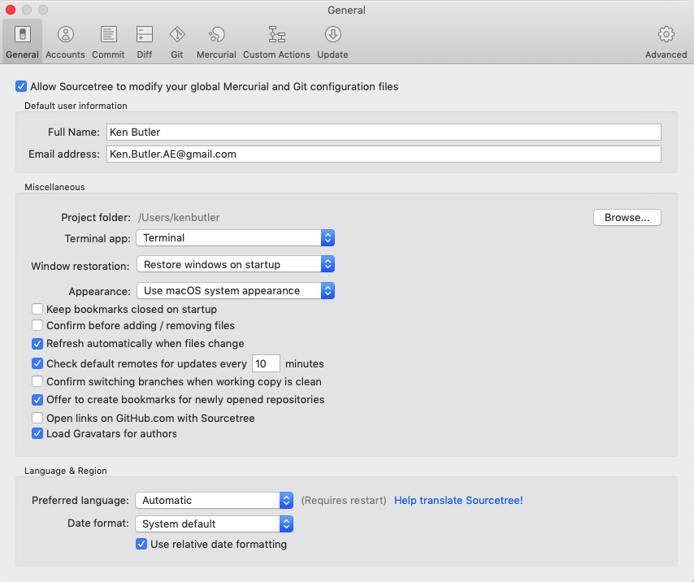

Configuration
SourceTree
When using Git in any form, configuration is important -- and sometimes required. This section hopes to address different aspects of Git configuration.
Note the arrow(s) in the bottom-right corner that controls navigation through the lesson. You may also navigate by pressing ESC and using the arrow keys.
Configuration: SourceTree
Ideally, you would have already configured your user identity when installing SourceTree , as shown in the example below.

At some point though, you may want to change it. Click the right arrow to see how!
Configuration: SourceTree
To edit your user identity, either (a) select the gear in the top-right corner and select “Accounts…”, or (b) select Preferences from the program menu. You can then navigate to "General". Here you can edit your user identity, as well as configure other settings.
